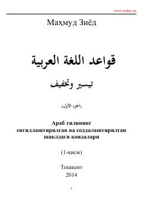

AТArab tilining asosiy grammatik qoidalarini o'rganish uchun soddalashtirilgan qo'llanma.
Mazkur kitob Mahmud Ziyod tomonidan tayyorlangan bo'lib, arab tilining asosiy grammatik qoidalarini oson va tushunarli tarzda bayon qiladi. Asar quruq yod olish usullaridan qochib, o'quvchiga tilni amalda qo'llash va jumla tuzilishini tushunishda yordam berishga qaratilgan.